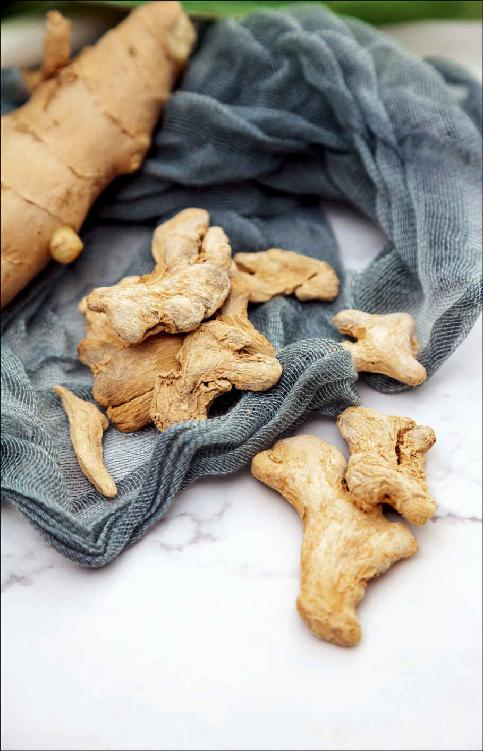
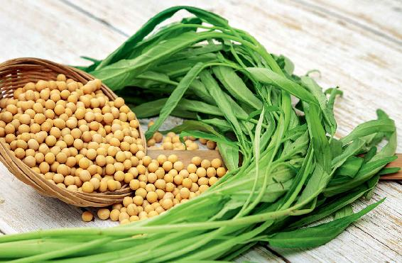

处暑节气的意思就是暑气到此为止，从今天开始，秋气开始驱散暑气，我们要慢慢地向炎热的天气告别了。
三伏的“伏”不是热的意思，而是指伏阴在下——阴气被阳气、暑气压制后，潜伏在地下。但是一到处暑节气，阴气就要开始渐渐地占上风了，不再伏在下面了，而是显露于外——秋气要开始驱散暑气了。
从处暑节气开始，我们就会慢慢地真正感受到秋天了，相应地饮食上就要有很大的调整。
建议您从立秋节气开始就不要再吃西瓜了。
如果您立秋节气还在吃的话，从处暑节气开始真的要停吃了，因为西瓜不适合在秋天吃。
秋天要吃什么水果呢？就是要吃带有酸味的水果。比如，在秋天上市的葡萄、桃子，都是带有一点微微的酸味的，还有苹果、冬枣，这些都是适合秋天吃的带有酸味的水果。
酸味水果有一个好处，就是酸味和甜味加在一起是可以滋阴的。
传统医学认为，酸、甘化阴。滋阴就是给身体补水、补血，因此，在这个时节吃酸味水果很合适。
在蔬菜方面，现在还不宜吃萝卜，因为萝卜是下气的。而经过三伏之后，人体多少有点气虚，就不适合再吃萝卜来散气。
但胡萝卜是可以吃的，因为胡萝卜是补气的。
陈皮可不可以用呢？陈皮要用的话，一定要跟其他的材料搭配来使用。因为陈皮除了有理气的作用外，它还有一个好处就是增强其他食材的作用。它跟补药在一起能增强补的作用，跟祛湿药在一起能增强祛湿的作用，所以现在您要用陈皮搭配其他食材使用，让它起到增益其他食材作用的效果就可以了。
还有生姜，我以前说过，“一年之中，秋不食姜”，那么秋天到底可不可以吃生姜呢？
做菜用生姜来当调料是没有问题的，如果您是吃泡仔姜，那么在早上的时候吃一两片还是可以的，但不要多吃。
如果是用姜做主要原料来炒菜，如姜丝炒肉片，这样的菜您现在就要少吃了，姜茶最好也不要喝。
当然有一种人例外，那就是长期在空调很足的房间生活或者办公的人，还是建议您在每天上午的时候，喝一点姜茶来祛除寒气。

秋天最适合吃的蔬菜是什么呢？就是出伏送暑汤的主料：豇豆角、空心菜。
它们都是很适合秋天吃的蔬菜，特别是豇豆角是可以一直吃的，如果它快下市了，您还可以把它腌成咸菜做成酸豇豆或者泡豇豆来吃。

1.豇豆角是为数不多的补益肾气的蔬菜
豇豆角是为数不多的补益肾气的蔬菜，如果您把它腌成酸菜、泡菜、咸菜，它因为有盐的作用，能更好地入肾经，补益肾气，帮助肾脏排出湿毒，所以在接下来的深秋和冬天，都可以经常吃它。
2.空心菜的老秆清利水湿的效果很好
空心菜嫩的茎叶，除了能做出伏送暑汤外，它的老秆还可以炒着吃。
空心菜的老秆清利水湿的效果很好，我们还可以做一道菜——空心菜老秆炒黄豆，这是我以前分享过的食方，空心菜老秆加上黄豆，补益肾气的作用更强了。
在五谷杂粮方面，秋天最适合吃的就是相思长生粥里的几种配方材料——红小豆、绿豆、花生，还有小米和高粱。这几种杂粮您都可以在做主食的时候搭配着来用。
到了处暑期间，还有一件要做的事情，那就是晚上提前一小时睡觉。
在夏天的时候，由于日落较晚，而且天气又很热，很多朋友都有在晚上纳凉吃夜宵的习惯。那从处暑节气开始，我们就要逐步把睡眠的时间提前了。
从处暑节气开始，我们就要逐渐减少在晚上的各种活动了，但可以出去散散步。因为秋气开始驱散暑气了，虽然感觉白天还是跟夏天一样热，但晚上已凉风习习了。
秋晚的凉风吹拂在身上，这种感觉其实是特别宝贵的，古人把它称赞为“新凉直万金”。
希望您也能在处暑节气享受到这价值万金的新凉。